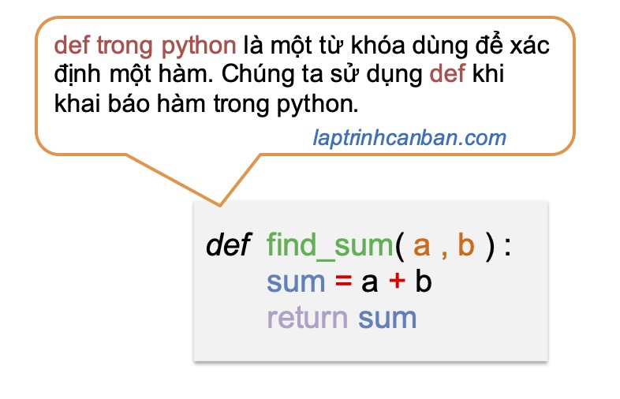

Hướng dẫn sử dụng def trong python. Trong Python, “def” là một từ khoá quan trọng được sử dụng để định nghĩa một hàm. Hàm là một khối mã mà bạn có thể gọi để thực hiện một loạt các công việc cụ thể. Việc sử dụng “def” để định nghĩa hàm là một trong những khía cạnh quan trọng nhất của lập trình Python, cho phép bạn tái sử dụng mã và tạo cấu trúc logic trong chương trình của mình. Trong bài viết này, chúng ta sẽ tìm hiểu về cách sử dụng “def” để định nghĩa hàm, cách truyền tham số và giá trị trả về, cũng như tại sao hàm là một phần quan trọng của lập trình Python.
Định nghĩa hàm trong Python bằng “def”
Để định nghĩa một hàm trong Python, bạn sử dụng từ khoá “def” theo sau là tên của hàm và dấu ngoặc đơn. Dưới đây là cú pháp cơ bản:
def ten_ham(): |
Ví dụ:
def chao_the_gioi(): |
Sau khi bạn đã định nghĩa hàm, bạn có thể gọi nó bằng tên của hàm theo sau là dấu ngoặc đơn. Ví dụ:
chao_the_gioi() |
Kết quả sẽ là:
Xin chào, thế giới! |
Hàm có thể được truyền tham số, là các giá trị đầu vào mà hàm sử dụng trong quá trình thực thi. Ví dụ:
def chao_nguoi(ten): |
Kết quả sẽ là:
Xin chào, Alice! |
Một hàm có thể trả về một giá trị bằng từ khoá “return”. Ví dụ:
def tinh_binh_phuong(x): |
Kết quả sẽ là:
25 |
Trên đây là căn bản về def trong python, hãy cùng phân tích kỹ hơn về khái niệm và cách dùng def trong Python dưới đây.
def trong python
def trong python là một từ khóa (keyword) dùng để xác định một hàm. Chúng ta sử dụng def khi định nghĩa một hàm trong python.

Trong bài viết Hàm trong Python bạn đã biết có 3 loại hàm trong python, trong đó có một loại hàm mà chúng ta có thể tự tạo hàm để sử dụng trong chương trình, đó chính là hàm Python do người dùng định nghĩa.
Khi muốn sử dụng một hàm Python do người dùng định nghĩa, trước hết chúng ta cần khai báo hàm trong python bằng cách sử dụng def trong python với cú pháp hàm như sau:
def ten_ham (tham_so_1, tham_so_2, ...) :
Câu lệnh 1 trong hàm
Câu lệnh 2 trong hàm
...
return gia_tri_tra_ve
Trong đó:
deflà từ khóa dùng để khai báo hàm trong Pythonten_hamlà một chuỗi ký tự dùng để đặt tên đại diện cho hàm.tham_solà các biến sử dụng trong khai báo hàm, cũng như để nhập đối số khi chúng ta sử dụng hàm.returnlà từ khóa dùng để trảgia_tri_tra_vetừ hàm trong Python
Ví dụ, chúng ta sử dụng def để tạo ra một hàm tính tổng hai số và trả về kết quả trong chương trình như sau:
def add(a, b): |
Lại nữa, nếu một hàm không cần nhận giá trị truyền vào từ bên ngoài thì chúng ta cũng có thể lược bỏ tham số khi khai báo hàm trong python như sau:
def ten_ham () :
Câu lệnh 1 trong hàm
Câu lệnh 2 trong hàm
…
return gia_tri_tra_ve
Như ở ví dụ sau đây, chúng ta không sử dụng tham số khi khai báo hàm:
def add(): |
Cuối cùng, return là từ khoá dùng để trả về giá trị trong python, và hàm chứa từ khoá return được gọi là hàm trả về giá trị trong python. Tuy nhiên nếu trong trường hợp không có giá trị nào cần trả về từ hàm thì chúng ta cũng có thể bỏ qua từ khoá này. Ví dụ:
def chao_the_gioi(): |
Gọi hàm trong python
Sau khi bạn đã định nghĩa hàm, bạn có thể gọi nó bằng tên của hàm với cú pháp sau đây:
ten_ham ( doi_so_1, doi_so_2,...)
Chúng ta viết tên hàm, sau đó đặt các đối số (các giá trị truyền vào khi gọi hàm) ở giữa cặp dấu ngoặc đơn () và cách nhau bởi dấu phẩy ,. Các giá trị của đối số sẽ được dùng để truyền tham số vào hàm trong python.
Ví dụ, chúng ta khai báo và gọi hàm trong python như sau:
def add(a, b): |
Lưu ý, chúng ta gọi các biến dùng để khai báo hàm là tham số, còn các giá trị thực truyền vào khi gọi hàm là đối số. Giá trị của các đối số sẽ được các tham số tương ứng nhận và thực hiện các xử lý ở bên trong hàm.
Việc các tham số bên trong hàm nhận các đối số từ bên ngoài hàm được gọi là truyền tham số vào hàm trong Python. Chi tiết về tham số và đối số trong python bạn có thể xem tại bài viết Hàm trong Python
Sau khi gọi hàm trong python, một giá trị là kết quả của hàm sẽ được trả về. Giá trị trả về từ hàm có thể được gán vào biến để sử dụng như sau:
def add(a, b): |
Trong trường hợp trong hàm được khai báo không chứa đối số, chúng ta cũng không thể truyền tham số vào hàm được. Khi đó chúng ta sẽ chỉ gọi hàm trong python bằng cách lược bỏ đối số đi như sau:
ten_ham ()
Ví dụ:
def chao_the_gioi(): |
Lại nữa, nếu như trong hàm đã khai báo không phải là hàm trả về giá trị trong python, có nghĩa là nó không chứa câu lệnh trả về giá trị return bên trong hàm, thì về mặc định, giá trị None sẽ được trả về. Ví dụ:
def sample(): |
Giá trị trả về từ hàm
Một hàm có thể trả về một giá trị bằng từ khoá “return”. Ví dụ:
def tinh_binh_phuong(x): |
Kết quả sẽ là:
25 |
5. Hàm làm cấu trúc logic
Hàm là một cách tốt để chia nhỏ chương trình thành các khối logic nhỏ hơn, giúp dễ quản lý và tái sử dụng mã. Bằng cách sử dụng hàm, bạn có thể tạo cấu trúc logic rõ ràng và hiệu quả hơn. Ví dụ:
def tinh_tong(a, b): |
Hàm làm cho mã dễ đọc
Việc sử dụng hàm cũng giúp mã của bạn dễ đọc hơn. Bằng cách đặt tên hàm mô tả công việc mà nó thực hiện, bạn có thể hiểu rõ hơn về chương trình của mình. Hãy xem xét ví dụ sau:
def tinh_diện_tích_hình_chữ_nhật(chieu_dai, chieu_rong): |
Khi đọc mã như trên, bạn có thể hiểu ngay lập tức rằng hàm tinh_diện_tích_hình_chữ_nhật tính diện tích hình chữ nhật và hàm tinh_chu_vi_hình_chữ_nhật tính chu vi hình chữ nhật.
Xử lý ngoại lệ
Lưu ý cuối cùng khi gọi hàm trong python, nếu như bạn gọi một hàm mà hàm đó vốn chưa được khai báo, ngoại lệ NameError sau đây sẽ xảy ra:
sample2() |
Để tránh việc chương trình bị dừng lại giữa chừng, bạn cũng cần có các xử lý ngoại lệ để tránh lỗi này.
Tổng kết
Trên đây Kiyoshi đã hướng dẫn bạn về cách khai báo hàm bằng def trong python, cũng như cách gọi hàm trong python rồi. Trong Python, “def” là từ khoá quan trọng để định nghĩa hàm. Hàm là một cách mạnh mẽ để chia nhỏ chương trình thành các khối logic nhỏ hơn, giúp tạo cấu trúc rõ ràng, dễ quản lý, và tạo mã dễ đọc hơn. Bằng cách sử dụng hàm, bạn có thể truyền tham số vào và trả về giá trị, giúp bạn giải quyết các vấn đề phức tạp và tạo ra mã Python hiệu quả hơn.
URL Link
https://laptrinhcanban.com/python/nhap-mon-lap-trinh-python/ham-trong-python/ham-def-trong-python/
HOME › python cơ bản - lập trình python cho người mới bắt đầu>>14. hàm trong python